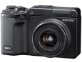

器材库 > 不可换镜头数码相机 > GXR S10

规格总览
发布日期
2009-11-10
影像规格
影像传感器
CCD
影像传感器尺寸
1/1.7英寸
总像素
1040万
有效像素
1000万
影像处理器
Smooth Imaging Engine IV图像处理引擎
静态图像格式
JPEG, RAW
静态图像尺寸
16:9 3648 x 2048/4:3 3648 x 2736/3:2 3648 x 2432/1:1 2736 x 2736
画幅比
3:2, 4:3, 16:9, 1:1
短片格式
AVI
短片尺寸
640x480@30fps
镜头和对焦
镜头结构
11片/7组
非球面镜片
4片
焦距
5.1mm-15.3mm
等效35mm画幅焦距
24mm-72mm
最大光圈
f/2.5-4.4
光学变焦
3倍
数码变焦
4倍
最近对焦距离
30cm, 微距10cm
对焦模式
CCD多点自动对焦和单点自动对焦；手动对焦；抓拍；无限远（焦点锁定及自动对焦辅助）
AF辅助灯/光
有
手动对焦
支持
曝光控制
测光模式
中央重点测光, 评价测光, 点测光
快门速度
静态图像：180 - 1/2000秒；短片：1/30 - 1/2000秒
曝光补偿
±4EV以1/3或1/2EV级调整
自动包围曝光
± 2档，以1/3EV或1/2EV为增量
连拍
5fps
拍摄模式
自动、程序平移、光圈优先、快门优先、手动、场景（短片、肖像、运动、风景、夜景、扭斜校正）、我的设置
闪光灯
内置闪光灯
弹出式
闪光涵盖范围
20cm～4.5m(W)/15cm ～ 2.7m(T)
闪光补偿
±2EV以1/3或1/2EV级调整
取景规格
LCD类型
VGA LCD
LCD尺寸
3.0英寸
LCD像素
92万
文件输入/输出
内置存储容量
86 MB
存储卡
SD/SDHC
数据接口
USB2.0
视频/音频接口
AV 输出, HDMI Mini 输出
配件端口
热靴, 脚架螺丝孔
电源
电池
DB-90
续航能力
可拍摄约410张
外观
颜色
黑色
尺寸
113.9 × 70.2 × 44.4mm
重量
325g
其它
工作温度
0-40℃
工作湿度
低于或等于85%
附件
USB 连接线，AV连接线，CD-ROM，手带，可充电式锂离子电池，电池充电器，镜头盖，连接器盖，软皮袋，使用说明书 (相机用户指南)
有崆2015-11-17 16:064.69 分
操作性 4.00功能性 5.00美观性 4.50趣味性 5.00耐用性 4.50性价比 5.00解像力 4.50色彩还原 5.00
产品图 / 样片
图一
评测 / 相关文章
- 详细内容 （存档）
- 全新概念数码相机GXR测试报告 （存档）
- ［资讯］理光公布GXR最新固件Ver. 1.51 （存档）
- ［资讯］理光30/2.8 GXR镜头专利公布 （存档）
- ［资讯］理光GXR/GRDIII固件再次升级 （存档）
- ［资讯］理光发布GXR最新固件Ver.1.31 （存档）
- ［资讯］支持M卡口，理光GXR新模组亮相 （存档）
- ［资讯］第三方出品 理光GXR专用真皮套 （存档）
- ［资讯］理光GXR/G700SE获2010 iF产品设计奖 （存档）
- ［资讯］Adobe多款软件/插件升级 （存档）
- ［资讯］理光GXR系统最新固件即将发布 （存档）